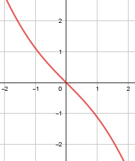

Aufgabe 130 f(x) = -0,5x * = - 0,5x * (x2 + 4)0,5 Produktregel erste Ableitung: u = -0,5x, u' = -0,5 v = (x2 + 4)0,5 Kettenregel: v' = 0,5 * 2x * (x2 + 4)-0,5 = x * (x2 + 4)-0,5 f'(x) = -0,5*(x2 + 4)0,5 + x*(x2 + 4)-0,5*(-0,5x) 0,5 * x2 f'(x) = -0,5 * (x2 + 4)0,5 - ------------- (x2 + 4)0,5 0,5 * x2 f'(x) = (x2 + 4)0,5 * (- 0,5 - -----------) x2 + 4 -0,5 * (x2 + 4) - 0,5x2 f'(x) = (x2 + 4)0,5 * (-------------------------) x2 + 4 -x2 - 2 f'(x) = ------------ (x2 + 4)0,5 Quotientenregel zweite Ableitung: u = -x2 - 2, u' = -2x v = (x2 + 4)0,5 Kettenregel: v' = 0,5 * 2x * (x2 + 4)-0,5 = x * (x2 + 4)-0,5 -2x*(x2+4)0,5 - x*(x2+4)-0,5*(-x2-2) f''(x) = -------------------------------------- ((x2 + 4)0,5)2 x * (-x2 - 2) -------------- -2x * (x2 + 4)0,5 - (x2 + 4)0,5 f''(x) = -------------------------------------- -2x * (x2 + 4) - x * (-x2 - 2) f''(x) = -------------------------------- (x2 + 4)1,5 -2x3 - 8x + x3 + 2x f''(x) = ---------------------- (x2 + 4)1,5 -x3 - 6x f''(x) = ------------- (x2 + 4)1,5 Zur Beurteilung, ob f'''(x) ≠ 0: (Begründung siehe Aufgabe 105) u = -x3 - 6x, u' = -3x2 - 6 u' -3x2 - 6 f'''(x) = --- = ------------- ≠ 0 für alle x v (x2 + 4)1,5 x2 + 4 ist > 0 für alle x Definitionsbereich: -∞ < x < ∞ Verhalten im Unendlichen: -0,5x * = = -0,5x * (x2 + 4)0,5 geht gegen ± ∞ für x --> ± ∞ Wertebereich: -∞ < f(x) < ∞ Symmetrie: f(-x) = -0,5 * (-x) * = 0,5x * = = -0,5x * (x2 + 4)0,5 ≠ f(x) --> keine Achsensymmetrie -f(-x) = -0,5x * = - 0,5x * (x2 + 4)0,5 = f(x) --> Punktsymmetrie Nullstellen: f(x) = -0,5x * = - 0,5x * (x2 + 4)0,5 = 0 -0,5x = 0 |:(-0,5) x = 0, f(0) = -0,5 * 0 * = 0 = 0 |2 x2 + 4 = 0 |-4 x2 = -4 |ⱱ --> keine weitere Lösung --> N(0|0) Schnittpunkt mit der y-Achse: x = 0 f(0) = -0,5 * 0 * = 0 Sy(0|0) Extrempunkte: f'(x) = 0 -x2 - 2 f'(x) = ------------- |*(x2 + 4)0,5 (x2 + 4)0,5 -x2 - 2 = 0 |+x2 x2 = -2 |ⱱ --> keine Lösung --> keine Extrempunkte Wendepunkte: f''(x) = 0 -x3 - 6x f''(x) = ------------- |* (x2 + 4)1,5 (x2 + 4)1,5 -x3 - 6x = 0 -x * (x2 + 6) = 0 -x = 0 |*(-1) x = 0; f'''(0) ≠ 0 --> WP(0|0) x2 + 6 = 0| -6 x2 = -6 |ⱱ --> keine weitere Lösung --> keine weiteren Wendepunkte Graph:
